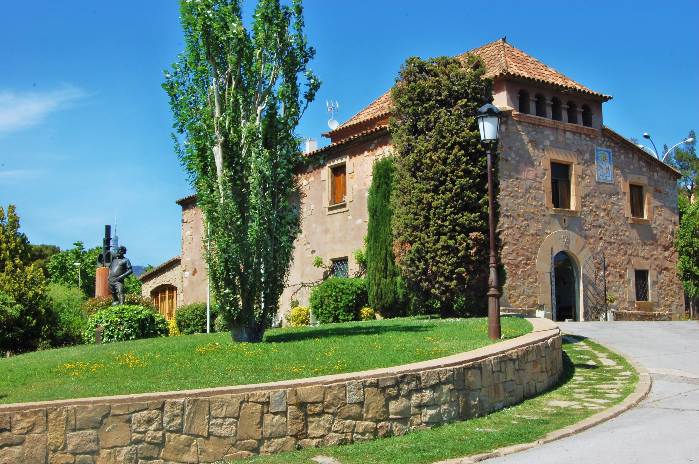
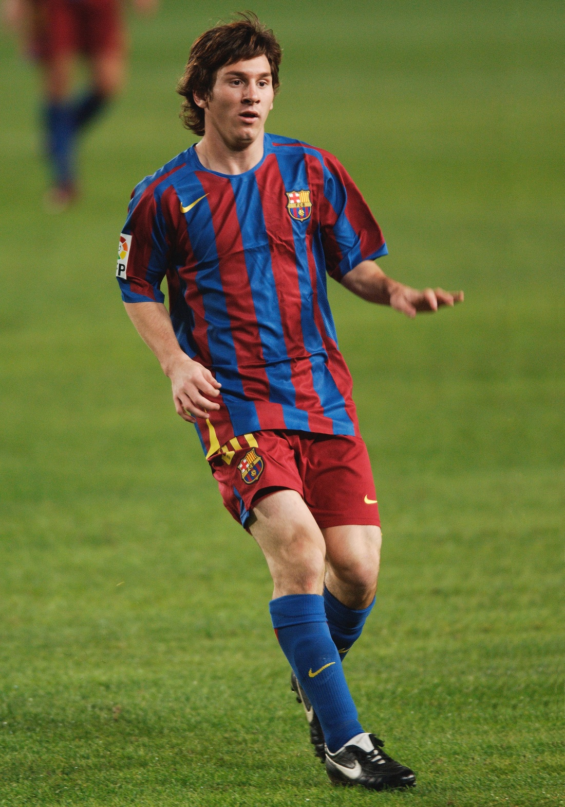

Lionel Andrés Messi (Spanish pronunciation: [ljoˈnel anˈdɾes ˈmesi] ( born 24 June 1987) is an Argentine professional footballer
who plays as a forward and captains both the Spanish club Barcelona and the Argentina national team. Often considered as the best
player in the world and widely regarded as one of the greatest players of all time, Messi has won a record six Ballon d'Or awards
a record six European Golden Shoes and was declared as the best player of the 21st century by The Independent , in December 2019.
He has spent his entire professional career with Barcelona, where he has won a club-record 34 trophies, including ten La Liga titles,
four UEFA Champions League titles and six Copas del Rey . A prolific goalscorer and creative playmaker, Messi holds the records for most
goals in La Liga (456), a La Liga and European league season , most hat-tricks in La Liga and the UEFA Champions League , and most assists
in La Liga (185), a La Liga and European league season and the Copa América . He has scored over 740 senior career goals for club and country.
Born and raised in central Argentina, Messi relocated to Spain to join Barcelona at age 13, for whom he made his competitive debut aged 17 in October 2004.
He established himself as an integral player for the club within the next three years, and in his first uninterrupted season in 2008–09 he helped Barcelona
achieve the first treble in Spanish football; that year, aged 22, Messi won his first Ballon d'Or. Three successful seasons followed, with Messi winning four
consecutive Ballons d'Or, making him the first player to win the award four times and in a row. During the 2011–12 season, he set the La Liga and European records
for most goals scored in a single season, while establishing himself as Barcelona's all-time top scorer. The following two seasons, Messi finished second for the
Ballon d'Or behind Cristiano Ronaldo (his perceived career rival), before regaining his best form during the 2014–15 campaign, becoming the all-time top scorer in
La Liga and leading Barcelona to a historic second treble, after which he was awarded a fifth Ballon d'Or in 2015 . Messi assumed the captaincy of Barcelona in 2018, and in 2019 he secured a record sixth Ballon d'Or.
An Argentine international, Messi is his country's all-time leading goalscorer. At youth level, he won the 2005
FIFA World Youth Championship , finishing the tournament with both the
Golden Ball and
Golden Shoe, and an
Olympic gold medal at the 2008 Summer Olympics. His style of play as a diminutive, left-footed dribbler drew comparisons with his compatriot Diego Maradona, who described Messi as his successor. After his senior debut in August 2005, Messi became the youngest Argentine to play and score in a FIFA World Cup during the 2006 edition, and reached the final of the 2007 Copa América, where he was named young player of the tournament. As the squad's captain from August 2011, he led Argentina to three consecutive finals: the 2014 FIFA World Cup, for which he won the Golden Ball, and the 2015 and 2016 Copa América. After announcing his international retirement in 2016, he reversed his decision and led his country to qualification for the 2018 FIFA World Cup, and a third-place finish at the 2019 Copa América.

Messi was born on 24 June 1987 in Rosario , the third of four children of Jorge Messi, a steel factory manager, and his wife Celia Cuccittini, who worked in a magnet manufacturing workshop. On his father's side, he is of Italian and Spanish descent, the great-grandson of immigrants from the northcentral Adriatic Marche region of Italy and Catalonia, and on his mother's side, he has primarily Italian ancestry. Growing up in a tight-knit, football-loving family , "Leo" developed a passion for the sport from an early age, playing constantly with his older brothers, Rodrigo and Matías, and his cousins, Maximiliano and Emanuel Biancucchi, both of whom became professional footballers. At the age of four he joined local club Grandoli, where he was coached by his father, though his earliest influence as a player came from his maternal grandmother , Celia, who accompanied him to training and matches. He was greatly affected by her death, shortly before his eleventh birthday; since then, as a devout Catholic, he has celebrated his goals by looking up and pointing to the sky in tribute to his grandmother.
A lifelong supporter of Newell's Old Boys, Messi joined the Rosario club when he was six years old. During the six years he played for Newell's, he scored almost 500 goals as a member of "The Machine of '87", the near-unbeatable youth side named for the year of their birth, and regularly entertained crowds by performing ball tricks during half-time of the first team's home games. However, his future as a professional player was threatened when, at age 10, he was diagnosed with a growth hormone deficiency. As his father's health insurance covered only two years of growth hormone treatment, which cost at least $1,000 per month, Newell's agreed to contribute, but later reneged on their promise. He was scouted by Buenos Aires club River Plate, whose playmaker, Pablo Aimar, he idolised, but they were also unable to pay for his treatment due to Argentina's economic collapse. His goalscoring idol growing up was Ronaldo, with Messi calling him "the best forward I've ever seen".
As the Messi family had relatives in Catalonia, they sought to arrange a trial with Barcelona in September 2000. First team director Charly Rexach immediately wanted to sign him, but the board of directors hesitated; at the time it was highly unusual for European clubs to sign foreign players of such a young age. On 14 December, an ultimatum was issued for Barcelona to prove their commitment, and Rexach, with no other paper at hand, offered a contract on a paper napkin. In February 2001, the family relocated to Barcelona, where they moved into an apartment near the club's stadium, Camp Nou. During his first year in Spain, Messi rarely played with the Infantiles due to a transfer conflict with Newell's; as a foreigner, he could only be fielded in friendlies and the Catalan league. Without football, he struggled to integrate into the team; already reserved by nature, he was so quiet that his teammates initially believed he was mute. At home, he suffered from homesickness after his mother moved back to Rosario with his brothers and little sister, María Sol, while he stayed in Barcelona with his father.
After a year at Barcelona's youth academy, La Masia, Messi was finally enrolled in the Royal Spanish Football Federation (RFEF) in February 2002. Now playing in all competitions, he befriended his teammates, among whom were Cesc Fàbregas and Gerard Piqué. After completing his growth hormone treatment aged 14, Messi became an integral part of the "Baby Dream Team", Barcelona's greatest-ever youth side. During his first full season (2002–03), he was top scorer with 36 goals in 30 games for the Cadetes A, who won an unprecedented treble of the league and both the Spanish and Catalan cups. The Copa Catalunya final, a 4–1 victory over Espanyol, became known in club lore as the partido de la máscara, the final of the mask. A week after suffering a broken cheekbone during a league match, Messi was allowed to start the game on the condition that he wear a plastic protector; soon hindered by the mask, he took it off and scored two goals in 10 minutes before his substitution. At the close of the season, he received an offer to join Arsenal, his first from a foreign club, but while Fàbregas and Piqué soon left for England, he chose to remain in Barcelona.
Barcelona
2003–05: Rise to the first team
During the 2003–04 season, his fourth witha Barcelona , Messi rapidly progressed through the club's ranks, debuting for a record five youth teams in a single campaign. After being named player of the tournament in four international pre-season competitions with the Juveniles B, he played only one official match with the team before being promoted to the Juveniles A, where he scored 18 goals in 11 league games. Messi was then one of several youth players called up to strengthen a depleted first team during the international break. French winger Ludovic Giuly explained how a teenage Leo caught the eye in a training session with Frank Rijkaard's first team: "He destroyed us all... They were kicking him all over the place to avoid being ridiculed by this kid, he just got up and kept on playing. He would dribble past four players and score a goal. Even the team's starting centre-backs were nervous. He was an alien.
At 16 years, four months, and 23 days old, Messi made his first team debut when he came on in the 75th minute during a friendly against José Mourinho's Porto on 16 November 2003 . His performance, creating two chances and a shot on goal, impressed the technical staff, and he subsequently began training daily with the club's reserve side, Barcelona B, as well as weekly with the first team. After his first training session with the senior squad, Barça's new star player, Ronaldinho, told his teammates that he believed the 16-year-old would become an even better player than himself. Ronaldinho soon befriended Messi, whom he called "little brother", which greatly eased his transition into the first team.

To gain further match experience, Messi joined Barcelona C in addition to the Juveniles A , playing his first game for the third team on 29 November. He helped save them from the relegation zone of the Tercera División , scoring five goals in ten games, including a hat-trick in eight minutes during a Copa del Rey match while man-marked by Sevilla's Sergio Ramos. His progress was reflected in his first professional contract, signed on 4 February 2004, which lasted until 2012 and contained an initial buyout clause of €30 million. A month later, on 6 March, he made his debut for Barcelona B in the Segunda División B, and his buyout clause automatically increased to €80 million. He played five games with the B team that season but did not score. Physically he was weaker than his opponents, who were often much older and taller, and in training he worked on increasing his muscle mass and overall strength in order to be able to shake off defenders. Towards the end of the season, he returned to both youth teams, helping the Juveniles B win the league. He finished the campaign having scored for four of his five teams with a total of 36 goals in all official competitions.
During the 2004–05 season, Messi was a guaranteed starter for the B team, playing 17 games throughout the campaign and scoring on six occasions. Since his debut the previous November, he had not been called up to the first team again, but in October 2004, the senior players asked manager Frank Rijkaard to promote him. Since Ronaldinho already played on the left wing, Rijkaard moved Messi from his usual position onto the right flank (though initially against the player's wishes), allowing him to cut into the centre of the pitch and shoot with his dominant left foot. Messi made his league debut during the next match on 16 October, against Espanyol, coming on in the 82nd minute. At 17 years, three months, and 22 days old, he was at the time the youngest player to represent Barcelona in an official competition. As a substitute player, he played 77 minutes in nine matches for the first team that season, including his debut in the UEFA Champions League against Shakhtar Donetsk. He scored his first senior goal on 1 May 2005, against Albacete, from an assist by Ronaldinho, becoming – at that time – the youngest-ever scorer for the club. Barcelona, in their second season under Rijkaard, won the league for the first time in six years.
2005–08: Becoming a starting eleven player
On 24 June 2005, his 18th birthday, Messi signed his first contract as a senior team player. It made him Barcelona player until 2010 , two years less than his previous contract, but his buyout clause increased to €150 million. His breakthrough came two months later, on 24 August, during the Joan Gamper Trophy, Barcelona's pre-season competition. A starter for the first time, he gave a well-received performance against Fabio Capello's Juventus, receiving an ovation from the Camp Nou . While Capello requested to loan Messi, a bid to buy him came from Inter Milan, who were willing to pay his €150 million buyout clause and triple his wages. According to then-president Joan Laporta, it was the only time the club faced a real risk of losing Messi, but he ultimately decided to stay. On 16 September , his contract was updated for the second time in three months and extended to 2014.